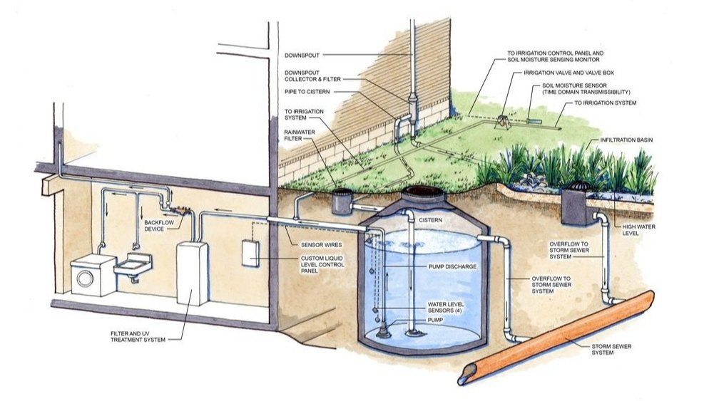

Let's dive into the intricacies of rainwater harvesting. This technique plays a vital role in sustainable water management, especially in regions facing water scarcity.
Working of Rainwater system:
Components of a Rainwater Harvesting System:
1.Catchment Area: This is the surface that captures the rainwater. The most common catchment area is the roof of a building. Other surfaces, like driveways and open fields, can also be used.
2.Gutters and Downspouts: These are essential for channeling the rainwater from the catchment area to the storage system. Gutters run along the edges of the roof, collecting water and directing it through downspouts.
3.First Flush Diverter:This device diverts the initial flow of water, which is often contaminated with debris and pollutants, away from the storage system. Only cleaner water is allowed into the system after the first flush.
4.Filters and Screens: Before the water reaches the storage tanks, it passes through filters and screens to remove debris, leaves, and other large particles.
5.Storage Tanks/Cisterns: These are used to store the collected rainwater. They come in various shapes, sizes, and materials, such as plastic, concrete, and metal. Storage tanks can be above ground, underground, or even on rooftops.
6.Distribution System: This system delivers the stored water to where it's needed. It can include pipes, pumps, and taps, depending on the complexity of the setup.
Steps in Rainwater Harvesting